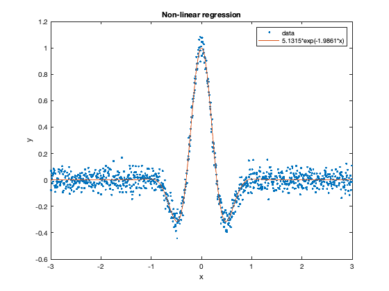
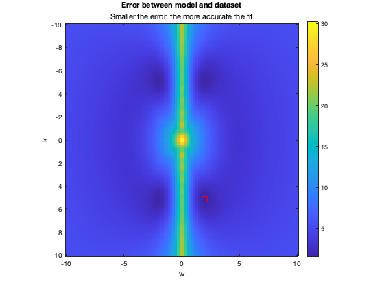

Matlab Programming Assignment (By Patrice Harapeti)
Contents
Background
Linear Regression and Minimisation.
Setup
clc; clear; close all;
Part One : Linear Regression
% Define given dataset x = linspace(-1, 1, 1e3) * 3; y = cos(x * 5 * (1+rand(1))) .* exp(-(x * (1+rand(1))) .^ 2) ... + randn(size(x)) * 0.05; % Define a lambda for model function which behaves like the actual data % ...where p(1) is k % ...where p(2) is w modelFunction = @(p) cos(p(1) * x) .* exp(-((p(2) * x) .^2)); % Generate lamda for error function which returns the error between the % model function and the actual data (based on the parameters passed in) errorFunction = @(p) norm(y - modelFunction(p)); % Minimise error function providing an appropriate parameter estimate p = fminsearch(errorFunction, [1 2]); % Upack parameters returned by fminsearch which define the parameters that % minimise the error function kOptimum = p(1); wOptimum = p(2); % Generate fitted function yFitted = modelFunction(p); % Plot and decorate the actual dataset, and the modelled function figure(1); plot(x, y, '.', x, yFitted, '-'); title('Non-linear regression'); legend('data', sprintf('%0.4f*exp(-%0.4f*x)', kOptimum, wOptimum)); xlabel('x'); ylabel('y');
Part Two : Minimisation
% Generate domain for k and w values k = linspace(-10, 10, 100); w = linspace(-10, 10, 100); % Calculate error over the k, w domain errorArray = nan([length(k), length(w)]); for i = 1:length(k) for j = 1:length(w) kVal = k(:, i); wVal = w(:, j); errorArray(i, j) = errorFunction([kVal, wVal]); end end % Use 2D plot to visualise the magnitude of the error and identify minima % Four minima found based on symmetry of dataset figure(2); imagesc(w, k, errorArray); hold on; % Plot minima of error function onto the 2D plot plot3(wOptimum, kOptimum, 0, '-s', 'MarkerSize', 10,... 'MarkerEdgeColor', 'red'); hold off; % Decorate 2D plot colorbar; axis('image'); title('Error between model and dataset'); subtitle('Smaller the error, the more accurate the fit'); xlabel('w'); ylabel('k');